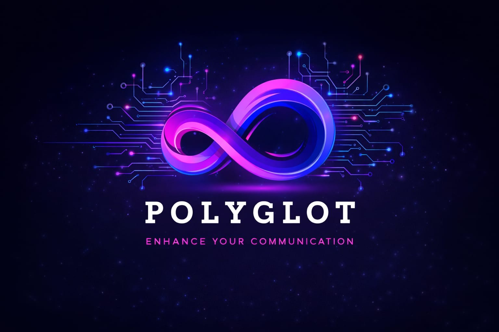

Simulate teams
Creates mock teams under an existing competition. Use only for testing and delete the test competition afterward.

POLYGLOTEVENT TEST MODEHostCreates mock teams under an existing competition. Use only for testing and delete the test competition afterward.